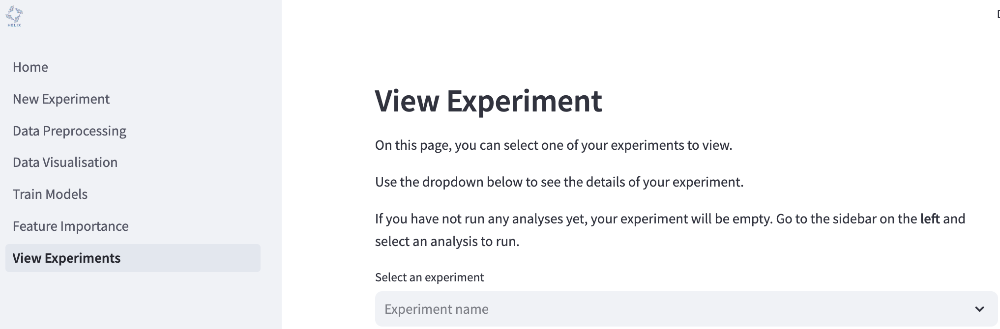
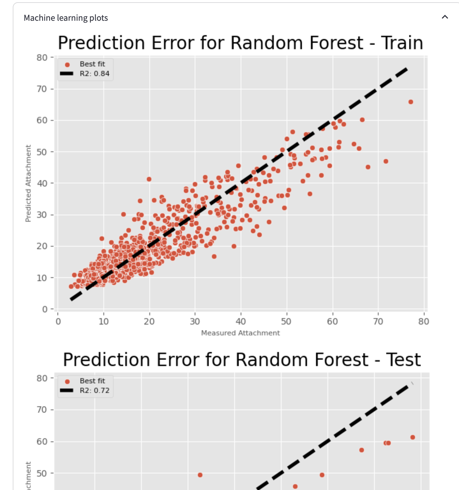
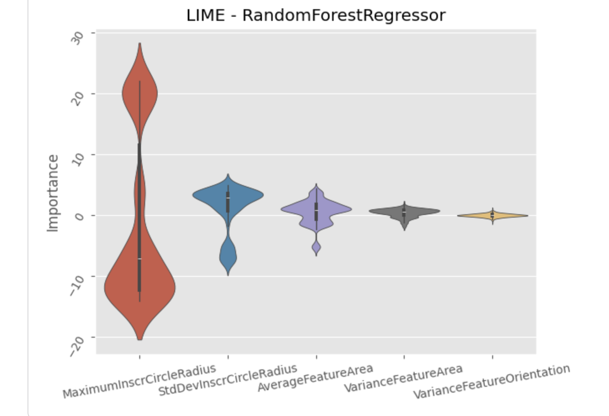

View experiments¶
You can view the outputs of your experiments by clicking “View Experiments” on the left hand side of the page.
To view an experiment, select one from the dropdown menu. Any outputs generated, such as plots and logs, will appear on the screen.


